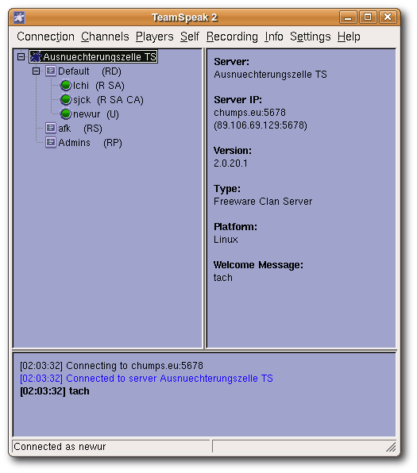

TeamSpeak
Archivierte Anleitung
Dieser Artikel wurde archiviert, da er - oder Teile daraus - nur noch unter einer älteren Ubuntu-Version nutzbar ist. Diese Anleitung wird vom Wiki-Team weder auf Richtigkeit überprüft noch anderweitig gepflegt. Zusätzlich wurde der Artikel für weitere Änderungen gesperrt.
Zum Verständnis dieses Artikels sind folgende Seiten hilfreich:
TeamSpeak  ist eine proprietäre Sprachkonferenzsoftware, welche den Benutzern ermöglicht, über das Internet oder ein lokales Netzwerk miteinander zu reden. TeamSpeak ist sehr beliebt unter Online-Spielern, da es geringe Anforderungen an den Prozessor und die Bandbreite der Internetanbindung stellt und für mehrere Betriebssysteme zur Verfügung steht.
ist eine proprietäre Sprachkonferenzsoftware, welche den Benutzern ermöglicht, über das Internet oder ein lokales Netzwerk miteinander zu reden. TeamSpeak ist sehr beliebt unter Online-Spielern, da es geringe Anforderungen an den Prozessor und die Bandbreite der Internetanbindung stellt und für mehrere Betriebssysteme zur Verfügung steht.
Hinweis:
TeamSpeak 2 ist proprietäre Software, die im Moment auch nicht mehr hinreichend gepflegt wird. Das Nachfolgeprodukt TeamSpeak 3 hat TeamSpeak 2 fast vollständig verdrängt und ist unbedingt vorzuziehen. Auch die freie Alternative Mumble sollte in Betracht gezogen werden. Ihr Funktionsumfang übersteigt den von TeamSpeak 2 sowieso schon weit.
Eine Anleitung zum Einrichten eines passenden Servers findet man im Artikel TeamSpeak-Server.
Installation¶
Paketquellen¶
TeamSpeak2 kann einfach über die Paketverwaltung von Ubuntu mit dem Paket
teamspeak-client (multiverse, [2])
installiert werden.
Manuell¶
Sollte man eine ältere Version von Ubuntu benutzen, so muss man man Teamspeak manuell installieren. Als erstes muss der TeamSpeak-Client von der offiziellen Seite heruntergeladen werden. Dann muss das .tar.bz2-Archiv entpackt [4] und in das neu erstellte Verzeichnis gewechselt werden [3]. Anschließend kann man das Setup ausführen.
sudo ./setup.sh
Nutzer eines Einzelplatzrechners können TeamSpeak direkt in ihr Homeverzeichnis installieren. Soll das Programm systemweit zur Verfügung stehen, empfiehlt sich eine Installation in das Verzeichnis /opt.
Benutzung¶
Starten¶
TeamSpeak2 kann man einfach über "Anwendungen -> Internet -> TeamSpeak" starten.
Wer TeamSpeak von Hand installiert hat, kann den Client per
INSTALLATIONSVERZEICHNIS/TeamSpeak2RC2/TeamSpeak
starten [5], wobei das INSTALLATIONSVERZEICHNIS natürlich passend angegeben werden muss.
Verbinden¶
Um sich mit anderen Spielern unterhalten zu können, muss man auf einen gemeinsamen Server verbinden. Am einfachsten und schnellsten geht das über "Connection/Quick Connect", wo nur die Server IP, ein Nickname und das Passwort eingetragen werden müssen.
Settings¶
Unter "Settings/Sound Input - Output Settings" kann zwischen "Push to Talk" und "Voice Activation" gewählt werden. Damit kann eingestellt werden, ob per Tastendruck oder ab einer bestimmten Lautstärke die Sprachübertragung gestartet werden soll. Wer sich für die zweite Variante entscheidet, muss evtl. mit dem "Voice Activation Level" spielen. Zu niedrige Einstellungen lassen die Mitspieler an jedem Atemzug teilhaben, wogegen ein zu hoher Wert zum Schreien verleitet.

Problembehebung¶
Man wird nicht bzw. zu leise gehört¶
Es kann sein, dass per default einige Audiokanäle stumm geschaltet sind. In diesem Fall sollte man die Einstellungen der Lautstärkeregler prüfen. Nicht nach ganz unten oder auf mute gestellt sein dürfen "(Front) Mikrofon" und "Analogmix". Evtl noch "Front" und "(Front) Mic Boost" höher stellen. Sind diese Kanäle nicht sichtbar, lassen sie sich über "Bearbeiten/Einstellungen" einblenden.
TeamSpeak blockiert die Soundkarte¶
TeamSpeak benutzt das veraltete Open Sound System  zur Audioausgabe. Allerdings kann bei diesem System immer nur eine Anwendung Klänge über die Soundkarte ausgeben. Das bedeutet für TeamSpeak: Benutzt eine andere Anwendung bereits die Soundkarte, so kann TeamSpeak selber keinen Ton ausgeben. Läuft TeamSpeak bereits und eine zweite Anwendung will einen Klang ausgeben, so bleibt diese stumm.
zur Audioausgabe. Allerdings kann bei diesem System immer nur eine Anwendung Klänge über die Soundkarte ausgeben. Das bedeutet für TeamSpeak: Benutzt eine andere Anwendung bereits die Soundkarte, so kann TeamSpeak selber keinen Ton ausgeben. Läuft TeamSpeak bereits und eine zweite Anwendung will einen Klang ausgeben, so bleibt diese stumm.
Variante 1: alsa-oss¶
Abhilfe schafft in diesem Fall die Installation von alsa-oss. Dadurch wird anstatt des altmodischen OSS das modernere ALSA zur Soundverarbeitung genutzt. Allerdings muss TeamSpeak dann in Zukunft mit dem Befehl
aoss teamspeak # Wenn TeamSpeak aus den Quellen installiert wurde bzw. aoss INSTALLATIONSVERZEICHNIS/TeamSpeak2RC2/TeamSpeak # wenn TeamSpeak von Hand installiert wurde
gestartet werden. In Einzelfällen führt die Installation von alsa-oss nicht zum gewünschten Erfolg. Eine allerletzte Alternative stellt der Einbau einer zweiten Soundkarte dar. Möglich sind z.B. USB-Headsets, die eine eigene Soundkarte darstellen.
Unter 64bit-Varianten von Ubuntu gibt es ein Problem mit dieser Lösung, offensichtlich fehlt hier eine entsprechende Bibliothek, bzw. ist falsch benannt. Dieser Thread auf ubuntuforums.org befasst sich mit dem Problem, dort wird auch ein Paket angeboten welches das Problem löst (getestet unter 04.08, 64bit).
Variante 2: padsp¶
Wer lieber Pulseaudio benutzen möchte, oder es mit ALSA nicht funktioniert, der kann den OSS-nach-Pulseaudio Wrapper padsp benutzen, der in den Pulseaudio-Paketen schon enthalten ist; und damit auch bei den Standardinstallationen von Ubuntu ab Hardy. Teamspeak muss dann in Zukunft mit dem Befehl
padsp teamspeak # Wenn TeamSpeak aus den Quellen installiert wurde bzw. padsp INSTALLATIONSVERZEICHNIS/TeamSpeak2RC2/TeamSpeak # wenn TeamSpeak von Hand installiert wurde
gestartet werden.
Variante 3: Arts¶
Eine zweite Möglichkeit existiert, falls der KDE Soundserver, Arts, zur Verfügung steht auf diesen Umzuleiten. Für Die Umleitung muss man das Startskript von Teamspeak editieren, da der Befehl artsdsp -m nur für Binaries aber nicht für Skripte funktioniert.
Man bearbeitet die Startdatei (falls über die Paketverwaltung installiert steht sie unter /usr/bin/teamspeak) und fügt in der letzten Zeile den Befehl des Soundservers hinzu, so dass die Zeile für arts folgendermaßen aussieht:
artsdsp -m /usr/lib/teamspeak-client/teamspeak.real $@
Variante 4: wine¶
Eine dritte Möglichkeit existiert, falls wine in der Version 1.1.2 oder höher installiert ist oder installiert wird. Es können die Windowsbinaris unter wine betrieben werden. Wine setzt auf den ALSA-Soundserver auf und bietet dadurch einwandfreie Soundwiedergabe.
Starkes Rauschen in den Kopfhörern¶
Evtl. ist das "(Front) Mikrofon" bzw. "(Front) Mic Boost" zu hoch eingestellt. 3/4 der maximalen Lautstärke sollte bessere Ergebnisse liefern.
Minimieren eines Optionsfensters friert TeamSpeak ein¶
Hierbei handelt es sich um einen Bug. Das minimierte Fenster erscheint nicht in der Taskleiste und lässt sich nicht mehr herstellen. Das Hauptfenster reagiert nicht, da es auf eine Eingabe im Optionsdialog wartet. Abhilfe kann die Benutzung von Beryl/Compiz schaffen, wodurch das Fenster wiederhergestellt und eine erneute Minimierung geblockt wird. Ansonsten muss TeamSpeak mit
killall teamspeak.real # beendet TeamSpeak bzw. killall TeamSpeak.bin # wenn TeamSpeak von Hand installiert wurde
im Terminal [3] beendet und anschließend neu gestartet werden.
- Erstellt mit Inyoka
-
 2004 – 2017 ubuntuusers.de • Einige Rechte vorbehalten
2004 – 2017 ubuntuusers.de • Einige Rechte vorbehalten
Lizenz • Kontakt • Datenschutz • Impressum • Serverstatus -
Serverhousing gespendet von